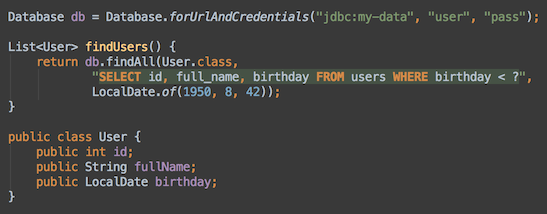
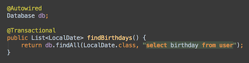

Pure SQL - no pain
Designed for Java 8

The APIs of Dalesbred have been designed to work well with lambdas. Types in java.time are also supported.
Plugin for IntelliJ IDEA

Dalesbred plugin for IntelliJ IDEA analyzes your classes and SQL queries to provide errors right in the editor.
Optional integration
Dalesbred has no required dependencies, but integrates smoothly with Spring Framework and Joda-Time.
Dalesbred is a library that strives to make database access from Java nicer. Dalesbred assumes that SQL is a great way to access database, but that JDBC as an API causes pain. Therefore it wraps JDBC with a set of helpers while still providing access to low-level functionality.
Dalesbred is released under permissive MIT License.